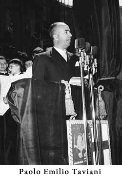

Kính tặng các bạn đọc của dân tộc Việt Nam giàu truyền thống vinh quang, cuốn sách kể lại cuộc phiêu lưu vĩ đại của nhà hàng hải Ý, người đã mở rộng địa bàn của thế giới.
PAOLO EMILIO TAVIANI
Thượng Nghị sĩ suốt đời

LỜI GIỚI THIỆU
Ngày 12 tháng 10 năm 1492, lần đầu tiên đặt chân lên bãi cát trắng, mịn của đảo nhỏ Guanahini (Goa-na-hi-nì), nay là đảo San Salvador (Xan Xan-va-đo), thuộc quần đảo Bahamas (Ba-ha-ma) ở Trung Mỹ, Cristoforo Colombo (Cri-xtô-phô-rô Cô-lôm-bô), nhà hàng hải người Genova (Giê-nô-va) ngỡ ngàng trước một thiên nhiên hùng vĩ và một cộng đồng thổ dân khác lạ: Tất cả - đàn bà cũng như đàn ông - đều ở truồng. Thân thể của họ được sơn màu xám, màu trắng, màu đỏ, hoặc các màu khác. Sơn toàn thân, hoặc chỉ sơn mặt, có người sơn cả hai mắt, hoặc chỉ sơn mũi.
Colombo đã ghi như vậy trong Nhật ký hành trình của ông, với một thái độ ngạc nhiên.
Tiếp đó, đoàn thám hiểm đặt chân lên các đảo khác lân cận, lớn hơn, như: Haïti, Cuba, Giamaica, Puerto Rico... Một thế giới kỳ lạ tiếp tục mở ra trước mắt họ, nhưng họ vẫn không thể nào hiểu ra rằng: đây là một lục dịa mới, một lục địa thứ tư, sau ba lục địa cũ - châu Âu, châu Phi và châu Á- mà “Thế giới Cũ” đã biết.
Giong thuyền đi thẳng về hướng tây, nơi mặt trời lặn, trong suốt thời gian vượt Đại Tây Dương, đầu óc Colombo chỉ chăm chăm một điều tin tưởng là có thể tới được phương Đông, nơi mặt trời mọc, để tiếp cận với Cataio ( Trung Quốc) và Cipango ( Nhật Bản). Tình cờ đụng phải các đảo miền biển Trung Mỹ, Colombo đã tưởng ngay rằng ông đã tới gần India ( Ấn Độ) và ông đã gọi chung các thổ dân khác nhau của vùng này là Indiani (In-đi-a-ni); từ này ngày nay chỉ những thổ dân da đỏ. Và cho đến tận cuối đời Colombo vẫn yên trí như vậy. Điều đó rất dễ hiểu. Với vốn tri thức học được từ các nhà địa lý học, các nhà vũ trụ học, các nhà vẽ bản đồ ở thời đại ông, cộng thêm kinh nghiệm hàng hải, dù là phong phú của bản thân ông, Colombo vẫn không thể nào hình dung được rằng “Biển cả đen tối” từng làm khiếp sợ những nhà hàng hải dũng cảm nhất, còn che dấu một lục địa rộng mênh mông, trải dài từ Bắc cực đến Nam cực. Chỉ nội một điểm ấy, phần quả đất mới được phát hiện cũng đã xứng đáng với cái tên “Thế giới Mới”.
Ở phương Đông từ xa xưa đã lưu hành truyền thuyết “Bồng lai tiên cảnh”. Sách Thuật dị ký chép đó là ba hòn đảo, có hình ba chiếc bầu rượu, Bồng lai, Phương trượng, Doanh châu, nơi các tiên ở, trường sinh bất lão. Từ thế kỷ III trước Công nguyên, Từ Phúc, người Trung Quốc, vì muốn trốn tránh hành động tàn bạo “phần thư khanh nho” của Tần Thủy Hoàng đã tình nguyện xin đi tìm thuốc trường sinh. Tần Thủy Hoàng đồng ý, cấp cho thuyền bè cùng mấy nghìn nam nữ đồng trinh. Từ Phúc tếch thẳng sang Nhật Bản sinh sống.
Ở châu Âu từ xa xưa cũng lưu hành rộng rãi truyền thuyết về một “Thời đại Hoàng kim” ở thời Thượng cổ. Kinh Thánh nói đến “Vườn Địa đàng”. Nhà triết gia Hy lạp Platone (Pla-tô-mê, 428-347 trước CN) trong cuốn Fedone nói về sự bất diệt của linh hồn, đã tưởng tượng có một thế giới rộng lớn và hùng mạnh ở bên kia Địa Trung Hải. Nhà thơ latinh Orazio ( 65-8 trước CN), trong cuốn Epodi, đã khuyên những người yêu nước hãy sớm rời bỏ thành La Mã, nơi dân chúng đang bị điêu đứng vì nội chiến và tranh giành quyền lực, để đi xây dựng một “La Mã mới” tại xứ sở Hoàng kim mà Tạo hóa, từ thuở khai thiên lập địa, đã dành riêng cho các “dân tộc sùng đạo”.
Những truyền thuyết, những linh cảm mang tính tiên tri trên đây của các nhà thơ và triết gia, chủ yếu vẫn thuộc lĩnh vực huyền thoại, hư hư thực thực. Mặc dù vậy, dàn đồng ca trong vở kịch Medea của nhà văn latinh Seneca ( 4 trước CN - 65 sau CN) vẫn trang trọng hát lên lời bố cáo sau đây, như một lời tiên tri sẽ sớm trở thành hiện thực: “Sau đây một ít năm, sẽ đến ngày đại dương mở những hàng rào chắn và người ta sẽ khám phá ra một dải đất mênh mông... và Thule (1) sẽ không còn là ranh giới cuối cùng của đất nổi”. Về sau con trai của Colombo đã hãnh diện ghi vào bên lề cuốn Medea của mình “Điều tiên đoán này đã được chứng minh bởi cha tôi, Đô đốc Cristoforo Colombo, vào năm 1492”.
Thế là một “Thế giới Mới” đã được phát hiện!
Tùy theo chỗ đứng của mình, các nhà sử học đời sau sẽ gọi sự kiện quan trọng này của lịch sử nhân loại bằng những thuật ngữ khác nhau: một cuộc phát kiến vĩ đại, hoặc một cuộc ăn cướp tàn bạo nhất trong lịch sử, sự khai hóa và xây dựng những quốc gia mới giàu có, hoặc là chiến tranh thực dân, nạn buôn bán nô lệ da đen, nạn diệt chủng thổ dân da đỏ. Họ có tất cả bao nhiêu người vào thời thám hiểm của Colombo? Thật khó mà biết dược chính xác, con số ước đoán nhiều khi quá cao, nhưng đến nay, năm thế kỷ sau, bốn mươi triệu người dòng dõi thổ dân da đỏ, đối tượng của sự phân biệt đối xử, phân biệt chủng tộc, vẫn đang phải đấu tranh gian khổ để bảo vệ phần đất của mình, bảo vệ ngôn ngữ và bản sắc văn hóa của chủng tộc mình. Nhấn mạnh mặt phải hay mặt trái của tấm huân chương là quan điểm riêng của từng nhà nghiên cứu, nhưng lịch sử diễn biến không chiều lòng một ai. Tốt hơn là nên tìm hiểu nó, nhận thức được vì sao nó đã diễn ra như thế trong thực tế, với những điều kỳ diệu và cả với những nỗi đắng cay. Ca ngợi hay chỉ trích chỉ có ý nghĩa khi giúp hàn gắn nhanh hơn nhũng vết thương mà lịch sử đã gây ra và đem lại sớm hơn những điều tốt lành cho hiện tại và tương lai.
Sau cuộc kỳ ngộ đầu tiên năm 1492, hai nửa trái đất - Thế giới Cũ và Thế giới Mới - đã nhập lại với nhau. Lần đầu tiên con người nhận biết hành tinh của mình một cách hoàn chỉnh. Tiếp sau cuộc gặp gỡ là những luồng di cư thường xuyên, khi ồ ạt, khi lẻ tẻ, là những tiếp xúc và đụng độ, là sự chung sống hội nhập. Thế giới Mới trở thành nơi hội tụ và hôn phối chủng tộc và văn hóa giữa các thổ dân bản địa với những nguời nhập cư, mới đến từ bán đảo Iberia (I-bê-ri-a), từ châu Âu, châu Phi, cả từ Arập và châu Á. Những con người thuộc những chủng tộc khác nhau, đến từ các chân trời văn hóa khác nhau, sẽ chung sống bên nhau dưới mái nhà mới, cùng chung sức sáng tạo ra một nền văn hóa mới, nền văn hóa chung của châu Mỹ, mang một phong cách thống nhất, nhưng đồng thời vẫn đa dạng một cách khác thường, dựa trên cơ sở ý thức bảo vệ bản sắc văn hóa và ngôn ngữ riêng của chủng tộc mình. Đó là hệ quả có ý nghĩa lịch sử lâu dài của cuộc kỳ ngộ năm 1492. Đó cũng là một thông điệp báo hiệu hình thái tương lai của văn hóa thế giới nếu như các dân tộc bảo đảm được sự chung sống trong Hòa bình và Hữu nghị.
Lịch sử trước năm 1492 còn phát triển rời rạc và có tính chất địa phương, khu vực. Sự gặp gỡ giữa hai Thế giới Cũ và Mới - đã tạo ra một quá trình thống nhất, trong đó các dân tộc sống trên hành tinh hiểu biết lẫn nhau ngày một nhiều hơn, liên quan và lệ thuộc với nhau ngày một nhiều hơn. Sự bùng nổ của khoa học kỹ thuật, đặc biệt là kỹ thuật thông tin và những vấn đề môi trường đang liên kết vận mệnh các dân tộc sống trên hành tinh lại với nhau, vượt lên trên những khác biệt văn hóa và văn minh. Ngày nay thế giới là một, dù chúng ta muốn hay không. Quá trình này đang được thể nghiệm ngày một sâu sắc hơn. Ý nghĩa thời đại của sự gặp gỡ giữa hai thế giới chính là đã mở đầu và báo hiệu sự ra đời của một thời đại mới, thời Hiện đại.
Tác giả của cuốn sách mà chúng ta sắp đọc là Paolo Emilio Taviani, một người Ý, quê ở Genova, cùng quê hương với nhà phát kiến vĩ đại Cristoforo Colombo. Ông là một trong ba nhà nghiên cứu nổi tiếng nhất trên thế giới về vấn đề Colombo, hiện đang còn sống. Một nhà nghiên cứu về Colombo đã từng viết: không phải ngẫu nhiên mà trong ba học giả nổi tiếng thế giới trong việc nghiên cứu về sự nghiệp của Colombo thì một là ngưòi Tây Ban Nha, quốc gia có vinh dự lịch sử tài trợ cho chương trình thám hiểm của Colombo; một là người Mỹ, xứ sở được Colombo phát hiện và một nữa là người Ý, đất nước có vinh dự là cái nôi sinh ra nhà thám hiểm. Người Tây Ban Nha đó là Salvatore de Madariaga (Xan-va-do đê Ma-đa-ri-a-ga), một nhà văn, một học giả, tác giả một cuốn sách tuyệt vời về Colombo. Người Mỹ đó là Samuel Eliot Morison (Xa-muy-ơn E-li-o Mô-ri-xơn), một Đô đốc Hải quân, người đã đi thăm tất cả các địa điểm mà Colombo đã đặt chân đến trong quá trình thám hiểm. Và người Ý đó là Paolo Emilio Taviani.
Năm 1992 nhân dịp kỷ niệm 500 năm sự kiện phát kiến ra châu Mỹ, bạn đọc nước ta đã được đọc một tác phẩm nhỏ của Taviani: Cristoforo Colombo, thiên tài biển cả do Hội Hữu nghị Việt Nam - Italia và Nhà xuất bản Kim Đồng xuất bản. Cuốn sách mà chúng ta sắp đọc thuộc vào những tác phẩm chủ yếu, quan trọng nhất mà Taviani đã viết về cuộc phát kiến của Colombo.
Một sự kiện lịch sử, một sự kiện khoa học nhưng lại được trình bày một cách hấp dẫn, lôi cuốn, mặt khác vẫn dựa một cách nghiêm ngặt trên những tài liệu chính xác, đã được thẩm tra, giám định kỹ càng. Taviani sẽ cho chúng ta biết kế hoạch táo bạo, phi thường đã được nhen nhóm hình thành như thế nào trong đầu óc Colombo, có liên hệ như thế nào với cội nguồn văn hóa của quê hương Genova độc đáo. Colombo đã trải qua nhũng ngày tháng kiên nhẫn chờ đợi, vận động, vừa vất vả vừa may mắn như thế nào ở Triều đình Tây Ban Nha, một đất nước đặc biệt của thế giới, từ cuối thế kỷ XV đến đầu thế kỷ XVI đã mở rộng cánh tay đón nhận nhiều nhân tài ưu tú, lỗi lạc, người ngoại quốc đến cư trú, sinh sống và sáng tạo. Một thái độ cởi mở, linh hoạt, hào hiệp mà ngày nay chúng ta không khỏi kinh ngạc. Chỉ riêng trong kỳ tích chinh phục biển cả, Tây Ban Nha đã dang rộng cánh tay đón nhận ba nhà thám hiểm nổi tiếng nhất trong lịch sử thế giới. Đó là Magellan (Ma-gen-lăng, 1480-1521) người Bồ Đào Nha, năm 1519, đã khám phá ra eo biển sẽ mang tên ông, mở con đường vào biển lớn phía Nam mà người ta đã gọi nhầm tên là Thái Bình Dương. Đó là Amerigo Vespucci (A-mê-ri-gô Vét-xpúc-si, 1454-1512) người Ý, gốc Firenze (Phi-ren-xe), nhập quốc tịch Castiglia (Tây Ban Nha), năm 1499 đã thám hiểm bờ Đại Tây Dương của Colombia (Cô-lôm-bi-a) và từ năm 1507, tên của ông đã được đặt cho Thế giới Mới: America. Và cuối cùng là Cristoforo Colombo (1451-1506).
Quả thực các quốc vương Thiên Chúa giáo Tây Ban Nha đã là những con người có con mắt tinh đời, cởi mở, dám mở rộng tầm nhìn ra toàn thế giới, những con người mang trong mình bản lĩnh phi thường của nước Tây Ban Nha thời Phục hưng. Và sự sáng suốt của họ đã được tuyên dương xứng đáng. Trong giờ phút đầu tiên đặt chân lên đảo Guanahini, hoạt động đầu tiên của Colombo là mở tung hai lá cờ hoàng gia Tây Ban Nha, một mang chữ F (Ferdinando: Phéc-đi-năng-đô, tên Vua Tây Ban Nha) một mang chữ Y (Ysabel: I-sa-ben, tên của Hoàng hậu Tây Ban Nha) cắm lên Đất Mới.
Taviani sinh năm 1912 ở Genova (Italia). Ông đã tốt nghiệp về Luật học, Văn học và Khoa học Xã hội tại trường Cao đẳng Sư phạm Pisa (Pi-da), nơi có ngọn tháp nghiêng nổi tiếng của Italia. Ngoài ra ông còn tốt nghiệp về khoa Cổ văn tự và ngoại giao. Từ năm 1943 đến năm 1945, ông là một trong những nhà lãnh đạo phong trào du kích kháng chiến chống phát xít ở miền Bắc Italia. Từ năm 1945 đến 1982, trong gần 40 năm, ông là giáo sư môn Lịch sử kinh tế tại trường Đại học của quê hương ông: Trường Đại học Genova. Từ 1946, ông được bầu làm Hạ nghị sĩ và từ 1976 được bầu làm Thượng nghị sĩ suốt đời của Nghị viện Italia. Ông đã nhiều lần tham gia Chính phủ Italia với cương vị Bộ trưởng. Hiện nay ông là Phó Chủ tịch Thượng nghị viện nước Cộng hòa Italia.
Taviani là tác giả của nhiều công trình nghiên cứu về các chuyến đi thám hiểm của Colombo. Hai cuốn Xứ Liguria và cốt cách Genova của Colombo trình bày những đặc điểm lịch sử, địa lý của quê hương Colombo và bản lĩnh, tính cách của nhà phát kiến; Cuốn Chiếc thuyền buồm, cùng thực hiện với Paolo Revelli (Pao-lô Rê-ven-li) và Samuel Eliot Morison giới thiệu và phân tích nội dung cuốn Nhật ký hành trình đi biển của Colombo.
Năm 1974, ông đã xuất bản công trình lớn, hai tập: Colombo và sự hình thành cuộc phát kiến vĩ đại. Năm 1984 xuất bản công trình lớn thứ hai, hai tập, bổ sung cho công trình trên, nhan đề là Những cuộc du hành của Colombo, một phát kiến vĩ dại. Năm 1989 xuất bản cuốn Cuộc phiêu lưu kỳ diệu của Colombo. Các công trình trên đây là kết quả của 40 năm miệt mài nghiên cứu, kiên trì đi sâu vào một đề tài, do đó đã đạt đến một trình độ khoa học cao. Nhiều công trình của Taviani đã được dịch ra tiếng nước ngoài, chủ yếu là tiếng Anh và bản thân ông đã được nhiều trường Đại học trên thế giới tặng bằng Tiến sĩ danh dự.
Chúng ta chân thành cám ơn Giáo sư Taviani đã trân trọng đề tặng cuốn sách này cho bạn đọc nước ta, đất nước mà ông cảm phục về những kỳ tích mới trong thời Hiện đại.
Hà Nội, tháng 10 - 1995
Nguyễn Văn Hoàn
(Trung tâm Khoa học Xã hội và Nhân văn Quốc gia)
Chú thích:
(1) Thule: một địa danh chưa được xác định rõ vị trí, nhưng người Hy Lạp và người La Mã cho rằng ở vào vùng bắc Scotland và Iceland.